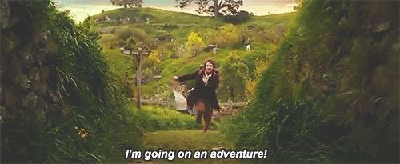

Il clima della grande città d'oltre mare sa essere mutevole e bizzarro, capace di passare dal sole radioso alla pioggia battente nel volgere di un incantesimo. Srotola questa checklist ufficiale, prepara il tuo baule e spunta ogni manufatto. Parola di Samwise: un viandante previdente non teme alcuna tempesta
La regola d'oro per esplorare Londra senza soffrire il meteo è una sola: vestirsi a cipolla.
Londra ha una scena notturna molto variegata e, in alcuni locali, potrebbe essere richiesto un dress code adeguato!
Le leggende narrano che a Londra possa piovere tre volte nello spazio di un mattino e splendere il sole prima del secondo pranzo. Non fidarti mai del cielo limpido del mattino.
Senza la giusta energia, anche i dispositivi più magici smettono di funzionare.
Il kit di pronto soccorso per curare i piedi stanchi o piccoli imprevisti del cammino.
Anche l'esploratore più instancabile ha bisogno di rinfrescarsi lungo la via senza svuotare il proprio sacco di monete.
Non sprecare i tuoi galeoni in bottiglie di plastica babbane. A Londra l'acqua del rubinetto è ottima e, evocando l'applicazione Refill sul tuo dispositivo, potrai mappare centinaia di fontanelle e rifugi commerciali dove riempire gratuitamente la tua fiasca.
